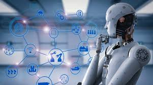

HTML5

HTML5 es un lenguaje markup (de hecho, las siglas de HTML significan Hyper Text Markup Language) usado para estructurar y presentar el contenido para la web. Es uno de los aspectos fundamentales para el funcionamiento de los sitios, pero no es el primero. Es de hecho la quinta revisión del estándar que fue creado en 1990. A fines del año pasado, la W3C la recomendó para transformarse en el estándar a ser usado en el desarrollo de proyectos venideros. Por así decirlo, qué es HTML5 está relacionado también con la entrada en decadencia del viejo estándar HTML 4, que se combinaba con otros lenguajes para producir los sitios que podemos ver hoy en día. Con HTML5, tenemos otras posibilidades para explotar usando menos recursos. Con HTML5, también entra en desuso el formato XHTML, dado que ya no sería necesaria su implementación.
Cuáles son sus novedades
En términos de Markup, el HTML5 introduce algunos elementos que hacen que se aggiorne a los tiempos que corren. Así, muchas de las novedades están relacionadas con la forma de construir websites que se tiene en la actualidad. Una de las más importantes novedades está relacionada con la inserción de multimedia en los sitios web, que ahora contarán con etiquetas HTML especiales para poder ser incluidos. Por otro lado, algunos aspectos de diseño también son incluidos en el lenguaje, así como también algunos detalles de navegación. Veremos todo esto en algunas líneas.
Con el uso de HTML5, se puede reducir la dependencia de los plug-ins que tenemos que tener instalados para poder ver una determinada web. Caso emblemático, el de Adobe Flash, que se ve claramente perjudicado por la instauración de este estándar. Por otro lado, fue un avance importante para dispositivos que de forma nativa no soportaban Flash, y que no soportaban tampoco plug-ins necesarios para hacerlo. Otro caso emblemático, el del iPhone. Pero además, con HTML5 se amplía el horizonte del desarrollo de aplicaciones que pueden ser usadas en una multiplicidad de dispositivos.
Gracias a HTML5, los usuarios pueden acceder a sitios web de manera offline, sin estar conectados a internet. Se suma también la funcionalidad de drag and drop, y también la edición online de documentos ampliamente popularizada por Google Docs. La geolocalización es uno de sus puntos fuertes, pero por otro lado, las etiquetas diseñadas especialmente para el audio y el video ahorran la necesidad de tener que tener un plug-in de Flash y, al mismo tiempo, asestan un golpe mortal al producto de Adobe, que cada vez se está usando menos. Sin embargo, es importante destacar que Flash sigue siendo utilizado y HTML5 todavía no hizo el “salto grande”, aunque está en camino.
Paginas relacionadas con el tema
Descripcion de HTML5
El popular HTML5 que es y para que funciona
HTML5 Wikipedia
¿Qué es HTML5? Todo lo que necesitas saber
Videos relacionados con el tema
Que es HTML5
Qué es HTML y cómo funciona
Introducción a HTML5
Mejoras html 5
CSS3

CSS3 es la última evolución del lenguaje de las Hojas de Estilo en Cascada (Cascading Style Sheets), y pretende ampliar la versión CSS2.1. Trae consigo muchas novedades altamente esperadas , como las esquinas redondeadas, sombras, gradientes , transiciones o animaciones, y nuevos layouts como multi-columnas, cajas flexibles o maquetas de diseño en cuadrícula (grid layouts).
Las partes experimentales son particulares para cada navegador y deberían ser evitadas en entornos de producción, o usadas con extrema precaución, ya que tanto la sintaxis como la semántica pueden cambiar en el futuro.
El Nivel 2 de CSS necesitó 9 años, desde Agosto de 2002 hasta Junio de 2011, para alcanzar el estado de Recomendación. Esto fué debido al hecho de que algunas características secundarias fueron retiradas de las especificaciones globales, con el fin de acelerar la normalización de las características no problemáticas, el Grupo de Trabajo CSS de la W3C, en una decisión referida como la doctrina Beijing dividió CSS en componentes más pequeños llamados módulos cada uno de estos módulos es ahora una parte independiente del lenguaje y se dirije a la estandarización a su propio ritmo mientras algunos módulos son ya recomendados de la W3C, otros todavía son borradores iniciales tambíen se añaden nuevos módulos cuando se identifican nuevas necesidades.
Formalmente, no existe un estandar de CSS3 por sí solo cada módulo es estandarizado independientemente, por lo que el estandar CSS consiste en CSS2.1 modificado y extendido por módulos terminados, no necesariamente todos con el mismo nivel numérico por tanto, puede ser definido un panorama del CSS estandar listando (enumerando) CSS2.1 y los módulos maduros.
Paginas relacionadas con el tema
Breve introducción a CSS3
Lenguaje CSS
CSS3
Hoja de estilos en cascada
Videos relacionados con el tema
¿Qué es CSS y para que sirve?
Tutorial CSS3: Introducción
Tutorial CSS3: Conceptos básicos
Conociendo CSS3
JAVASCRIPT

JavaScript (abreviado comúnmente JS) es un lenguaje de programación interpretado, dialecto del estándar ECMAScript. Se define como orientado a objetos,3 basado en prototipos, imperativo, débilmente tipado y dinámico.
Se utiliza principalmente en su forma del lado del cliente (client-side), implementado como parte de un navegador web permitiendo mejoras en la interfaz de usuario y páginas web dinámicas4 aunque existe una forma de JavaScript del lado del servidor(Server-side JavaScript o SSJS). Su uso en aplicaciones externas a la web, por ejemplo en documentos PDF, aplicaciones de escritorio (mayoritariamente widgets) es también significativo.
Desde el 2012, todos los navegadores modernos soportan completamente ECMAScript 5.1, una versión de javascript. Los navegadores más antiguos soportan por lo menos ECMAScript 3. La sexta edición se liberó en julio del 2015.5.
JavaScript se diseñó con una sintaxis similar a C, aunque adopta nombres y convenciones del lenguaje de programación Java. Sin embargo, Java y JavaScript tienen semánticas y propósitos diferentes.
Todos los navegadores modernos interpretan el código JavaScript integrado en las páginas web. Para interactuar con una página web se provee al lenguaje JavaScript de una implementación del Document Object Model (DOM).
Paginas relacionadas con el tema
JavaScript
Que es JavaScript
Pagina Oficial de JavaScript
Fundamentos de JavaScript
Videos relacionados con el tema
¿Qué es JavaScript? bien explicado
APIs Javascript del HTML5
QUIERO APRENDER JAVASCRIPT ¿POR DÓNDE EMPIEZO?
¿Por qué aprender Javascript?
PROGRESIVE WEB APPS
Las aplicaciones web progresivas (PWA) son aplicaciones web que se cargan como páginas web o sitios web normales, pero que pueden ofrecer al usuario funcionalidades como trabajar sin conexión, notificaciones push y acceso a hardware del dispositivo tradicionalmente disponible solo para aplicaciones móviles nativas. Las PWA son una tecnología emergente que combina los estándares abiertos de la web que ofrecen los navegadores modernos para brindar los beneficios de una experiencia móvil enriquecida.
Fondo
Desde alrededor de 2005, las tecnologías de desarrollo web han cambiado de documentos estáticos a dinámicos impulsados por herramientas de servidor (PHP, ASP.NET) del lado del cliente (por ejemplo, Ajax [1]) y diseño web receptivo. [2] A pesar de un impulso inicial para aplicaciones basadas en web basadas en estas tecnologías en dispositivos como el iPhone 2007, los intentos de aplicaciones web fallaron en comparación con las aplicaciones nativas. Las aplicaciones nativas proporcionan una mejor experiencia de usuario y se inician más rápido en comparación con tener que cargar en un navegador en tiempo de ejecución. Los recursos empaquetados y el acceso directo al hardware permitieron a las aplicaciones nativas funcionar mucho más rápido y proporcionar más funciones. A mediados de la década de 2010, sin embargo, las continuas mejoras en HTML5, CSS3 y JavaScript, navegadores web significativamente más capaces y compatibles con los estándares, junto con potentes procesadores como el A10 y Snapdragon 821 hicieron de las aplicaciones híbridas perfectas una alternativa viable.
Características
En 2015, el diseñador Frances Berriman y el ingeniero de Google Chrome Alex Russell acuñaron el término "aplicaciones web progresivas" [3] para describir aplicaciones que aprovechan las nuevas características compatibles con navegadores modernos, incluidos los trabajadores de servicios y los manifiestos de aplicaciones web, que permiten a los usuarios actualizar aplicaciones web a aplicaciones web progresivas en su sistema operativo (SO) nativo. Según Google Developers, [3] [4] [5] estas características son:
Progresivo: funciona para todos los usuarios, independientemente de la opción del navegador, ya que están diseñados con mejoras progresivas como principio básico.
Receptivo: ajuste cualquier factor de forma: escritorio, dispositivo móvil, tableta o formularios que aún no se hayan creado.
Conectividad independiente: los trabajadores del servicio permiten el trabajo fuera de línea o en redes de baja calidad.
Aplicación similar: se siente como una aplicación para el usuario con interacciones y navegación de estilo de aplicación.
Paginas relacionadas con el tema
Progressive Web Apps
¿Qué son las Progressive Web Apps?
Progressive Web Apps
Progressive Web Apps: Wiki (EN)
Videos relacionados con el tema
Que es un Progressive Web App ?
Web Apps | Qué son y cómo hacer una fácilmente
Introducción a Progressive Web Apps (PWA)
¿ Como crear un Progressive Web App con Ionic ?
INTELIGENCIA ARTIFICIAL

La inteligencia artificial (IA), también llamada inteligencia computacional, es la inteligencia exhibida por máquinas. En ciencias de la computación, una máquina «inteligente» ideal es un agente racional flexible que percibe su entorno y lleva a cabo acciones que maximicen sus posibilidades de éxito en algún objetivo o tarea.1 Coloquialmente, el término inteligencia artificial se aplica cuando una máquina imita las funciones «cognitivas» que los humanos asocian con otras mentes humanas, como por ejemplo: «aprender» y «resolver problemas».2 A medida que las máquinas se vuelven cada vez más capaces, tecnología que alguna vez se pensó que requería de inteligencia se elimina de la definición. Por ejemplo, el reconocimiento óptico de caracteres ya no se percibe como un ejemplo de la «inteligencia artificial» habiéndose convertido en una tecnología común.3 Avances tecnológicos todavía clasificados como inteligencia artificial son los sistemas de conducción autónomos o los capaces de jugar al ajedrez o al Go.
Según Takeyas (2007) la IA es una rama de las ciencias computacionales encargada de estudiar modelos de cómputo capaces de realizar actividades propias de los seres humanos en base a dos de sus características primordiales: el razonamiento y la conducta.4
En 1956, John McCarthy acuñó la expresión «inteligencia artificial», y la definió como «la ciencia e ingenio de hacer máquinas inteligentes, especialmente programas de cómputo inteligentes».
Para Nils John Nilsson son cuatro los pilares básicos en los que se apoya la inteligencia artificial:
Búsqueda del estado requerido en el conjunto de los estados producidos por las acciones posibles. Algoritmos genéticos (análogo al proceso de evolución de las cadenas de ADN). entorno software.
Paginas relacionadas con el tema
Que es inteligencia artificial
Como funciona la inteligencia artificial
Articulos de la inteligencia artificial
Ejemplos de inteligencia artificial
Videos relacionados con el tema
El final de Sophia Robot con Inteligencia Artificial (Último video)
¿Qué es la inteligencia artificial?
Titanes de la Inteligencia Artificial: El Futuro de Ayer Hoy
Este Robot con Inteligencia Artificial amenaza con acabar con los humanos
MACHINE LEARNING

Machine Learning es una disciplina científica del ámbito de la Inteligencia Artificial que crea sistemas que aprenden automáticamente. Aprender en este contexto quiere decir identificar patrones complejos en millones de datos. La máquina que realmente aprende es un algoritmo que revisa los datos y es capaz de predecir comportamientos futuros. Automáticamente, también en este contexto, implica que estos sistemas se mejoran de forma autónoma con el tiempo, sin intervención humana. Veamos cómo funciona.
Big Data y Machine Learning aplicado a la empresa
El aprendizaje automático tiene una amplia gama de aplicaciones, incluyendo motores de búsqueda, diagnósticos médicos, detección de fraude en el uso de tarjetas de crédito, análisis del mercado de valores, clasificación de secuencias de ADN, reconocimiento del habla y del lenguaje escrito, juegos y robótica.El aprendizaje automático tiene una amplia gama de aplicaciones, incluyendo motores de búsqueda, diagnósticos médicos, detección de fraude en el uso de tarjetas de crédito, análisis del mercado de valores, clasificación de secuencias de ADN, reconocimiento del habla y del lenguaje escrito, juegos y robótica.
Una empresa de telefonía quiere saber qué clientes están en “peligro” de darse de baja de sus servicios para hacer acciones comerciales que eviten que se vayan a la competencia. ¿Cómo puede hacerlo? La empresa tiene muchos datos de los clientes, muchísimos: antigüedad, planes contratados, consumo diario, llamadas mensuales al servicio de atención al cliente, últimos cambios de planes contratados… pero seguramente los usa solo para facturar y para hacer estadísticas. ¿Qué más puede hacer con esos datos? Se pueden usar para predecir cuándo un cliente se va a dar de baja y gestionar la mejor acción que lo evite. En pocas palabras, con Machine Learning se puede pasar de ser reactivos a ser proactivos. Los datos históricos del conjunto de los clientes, debidamente organizados y tratados en bloque, generan una base de datos que se puede explotar para predecir futuros comportamientos, favorecer aquellos que mejoran los objetivos de negocio y evitar aquellos que son perjudiciales.
Esa cantidad ingente de datos son imposibles de analizar por una persona para sacar conclusiones y menos todavía para hacer predicciones. Los algoritmos en cambio sí pueden detectar patrones de comportamiento contando con las variables que le proporcionamos y descubrir cuáles son las que han llevado, en este caso, a darse de baja como cliente. La siguiente imagen es un ejemplo de una predicción simplificada basada en datos de una compañía de telefonía ficticia, pero usando una herramienta de Machine Learning real
Paginas relacionadas con el tema
Que es machine learning
funciones de machine learning
caracteristica de machine learning
machine learning page
Videos relacionados con el tema
Todos podemos aprender learning
Que es machine learning
Machine learning payton
7 step de machine learning
DEEP LEARNING

Aprendizaje profundo (en inglés, deep learning) es un conjunto de algoritmos de clase aprendizaje automático (en inglés, machine learning) que intenta modelar abstracciones de alto nivel en datos usando arquitecturas compuestas de transformaciones no lineales múltiples.
El aprendizaje profundo es parte de un conjunto más amplio de métodos de aprendizaje automático basados en asimilar representaciones de datos. Una observación (por ejemplo, una imagen) puede ser representada en muchas formas (por ejemplo, un vector de píxeles), pero algunas representaciones hacen más fácil aprender tareas de interés (por ejemplo, "¿es esta imagen una cara humana?") sobre la base de ejemplos, y la investigación en este área intenta definir qué representaciones son mejores y cómo crear modelos para reconocer estas representaciones.
Varias arquitecturas de aprendizaje profundo, como redes neuronales profundas, redes neuronales profundas convolucionales, y redes de creencia profundas, han sido aplicadas a campos como visión por computador, reconocimiento automático del habla, y reconocimiento de señales de audio y música, y han mostrado producir resultados de vanguardia en varias tareas.
Paginas relacionadas con el tema
Dead learning
Que es dead learning
Como funciona
caracteristicas Dead learning
Videos relacionados con el tema
Steps dead learning
Que es Dead learning
Como funciona
Dead learning
RED NEURONAL
Las redes neuronales (también conocidas como sistemas conexionistas) son un modelo computacional basado en un gran conjunto de unidades neuronales simples (neuronas artificiales), de forma aproximadamente análoga al comportamiento observado en los axones de las neuronas en los cerebros biológicos1. Cada unidad neuronal está conectada con muchas otras y los enlaces entre ellas pueden incrementar o inhibir el estado de activación de las neuronas adyacentes. Cada unidad neuronal, de forma individual, opera empleando funciones de suma. Puede existir una función limitadora o umbral en cada conexión y en la propia unidad, de tal modo que la señal debe sobrepasar un límite antes de propagarse a otra neurona. Estos sistemas aprenden y se forman a sí mismos, en lugar de ser programados de forma explícita, y sobresalen en áreas donde la detección de soluciones o características es difícil de expresar con la programación convencional.
Las redes neuronales suelen consistir en varias capas o un diseño de cubo, y la ruta de la señal atraviesa de adelante hacia atrás. Propagación hacia atrás es donde se utiliza la estimulación hacia adelante o en el "frente" para restablecer los pesos de las unidades neuronales y esto a veces se realiza en combinación con una formación en la que se conoce el resultado correcto. Las redes modernas son un poco más libres en el sentido de que fluye en términos de estimulación e inhibición con conexiones que interactúan de una manera mucho más caótica y compleja. Las redes neuronales dinámicas son lo más avanzadas en que se pueden formar dinámicamente nuevas conexiones e incluso nuevas unidades neuronales.
El objetivo de la red neuronal es resolver los problemas de la misma manera que el cerebro humano, aunque las redes neuronales son más abstractas. Los proyectos de redes neurales modernas suelen trabajar desde unos miles a unos pocos millones de unidades neuronales y millones de conexiones que, si bien son muchas órdenes, siguen siendo de una magnitud menos compleja que la del cerebro humano, más bien cercana a la potencia de cálculo de un gusano.
Nuevas investigaciones sobre el cerebro a menudo estimulan la creación de nuevos patrones en las redes neuronales. Un nuevo enfoque está utilizando conexiones que se extienden mucho más allá y capas de procesamiento de enlace en lugar de estar siempre localizado en las neuronas adyacentes.
Paginas relacionadas con el tema
Red neuronal
Que es red neuronal
Caracteristicas
Funciones
Videos relacionados con el tema
Red neuronales
Como crear nuestra primera red neuronal
Que es una red neural
Como funciona la red neuronal
CRIPTOMONEDAS
En los sistemas de criptomonedas, se garantiza la seguridad, integridad y equilibrio de sus estados de cuentas (contabilidad) por medio de un entramado de agentes (transferencia de archivo segmentada o transferencia de archivo multifuente) que se verifican (desconfían) mutuamente llamados mineros, que son, en su mayoría, público en general y protegen activamente la red (el entramado) al mantener una alta tasa de procesamiento de algoritmos, con la finalidad de tener la oportunidad de recibir una pequeña propina, que se reparte de manera aleatoria.
Romper la seguridad existente en una criptomoneda es matemáticamente posible, pero el costo para lograrlo sería inasumiblemente alto. Por ejemplo, un atacante que intentase quebrar el sistema de prueba de trabajo de Bitcoin necesitaría una potencia computacional mayor que el de todo el entramado (red-enjambre) de todos los mineros del sistema, y aun así, solo tendría una probabilidad de éxito del 50% (n.º de ronda de autenticación), en otras palabras, romper la seguridad de Bitcoin exigiría una capacidad superior a la de empresas tecnológicas del tamaño de Google.
Está previsto que en el futuro la computación cuántica pueda llegar a ser una realidad, lo que rompería el equilibrio en caso de que los desarrolladores no pudieran implementar a tiempo el sistema para usar algoritmos poscuánticos, por tratarse de una tecnología propietaria.
Las criptomonedas hacen posible el llamado internet del valor, también conocido por las siglas IoV (del inglés internet of value), también llamado Internet del dinero: son aplicaciones de Internet que permiten el intercambio de valor en forma de criptomonedas. Este valor pueden ser contratos, propiedad intelectual, acciones o cualquier propiedad de algo con valor. Las cosas de valor ya se podían intercambiar antes usando sistemas de pago como Paypal. Sin embargo la diferencia entre pagar con algo como Paypal y pagar con una criptomoneda consiste en que pagar con Paypal requiere que el pago se haga a través de redes privadas como las de las tarjetas de crédito y bancos, mientras que el pago usando criptomonedas no tiene intermediarios. Va directamente del comprador al vendedor. De esta forma, se tiene un sistema de transferencia universal de valor, libre de intermediaciones.
BLOCKCHAIN
Una cadena de bloques o cadena articulada, conocida en inglés como blockchain, es una estructura de datos en la que la información contenida se agrupa en conjuntos (bloques) a los que se les añade metainformaciones relativas a otro bloque de la cadena anterior en una línea temporal, de manera que gracias a técnicas criptográficas, la información contenida en un bloque sólo puede ser repudiada o editada modificando todos los bloques posteriores. Esta propiedad permite su aplicación en entorno distribuido de manera que la estructura de datos blockchain puede ejercer de base de datos pública no relacional que contenga un histórico irrefutable de información. En la práctica ha permitido, gracias a la criptografía asimétrica y las funciones de resumen o hash, la implementación de un registro contable (ledger) distribuido que permite soportar y garantizar la seguridad de dinero digital.
Siguiendo un protocolo apropiado para todas las operaciones efectuadas sobre la blockchain, es posible alcanzar un consenso sobre la integridad de sus datos por parte de todos los participantes de la red sin necesidad de recurrir a una entidad de confianza que centralice la información. Por ello se considera una tecnología en la que la "verdad" (estado confiable del sistema) es construída, alcanzada y fortalecida por los propios miembros; incluso en un entorno en el que exista una minoría de nodos en la red con comportamiento malicioso (nodos sybil) dado que, en teoría, para comprometer los datos, un atacante requeriría de una mayor potencia de cómputo y presencia en la red que el resultante de la suma de todos los restantes nodos combinados. Por las razones anteriores, la tecnología blockchain es especialmente adecuada para escenarios en los que se requiera almacenar de forma creciente datos ordenados en el tiempo, sin posibilidad de modificación ni revisión y cuya confianza pretenda ser distribuída en lugar de residir en una entidad certificadora. Este enfoque tiene diferentes aspectos: Almacenamiento de datos, se logra mediante la replicación de la información de la cadena de bloques. Transmisión de datos, se logra mediante redes de pares. Confirmación de datos, se logra mediante un proceso de consenso entre los nodos participantes.
El tipo de algoritmo más utilizado es el de prueba de trabajo en el que hay un proceso abierto competitivo y transparente de validación de las nuevas entradas llamada minería. El concepto de cadena de bloque fue aplicado por primera vez en 2009 como parte de Bitcoin.
Los datos almacenados en la cadena de bloques normalmente suelen ser transacciones (p. ej. financieras) por eso es frecuente llamar a los datos transacciones. Sin embargo, no es necesario que lo sean. Realmente podríamos considerar que lo que se registran son cambios atómicos del estado del sistema. Por ejemplo una cadena de bloques puede ser usada para estampillar documentos y asegurarlos frente a alteraciones.
Paginas relacionadas con el tema
¿Qué es blockchain, la tecnología que viene a revolucionar las finanzas?
¿Qué es el Blockchain?
Cadena de bloques: Guía básica para entender de una vez qué es eso del blockchain
Videos relacionados con el tema
Blockchain y la verdad matemática | Néstor Palao | TEDxMadrid
Blockchain: Más allá del bitcoin | José Juan Mora | TEDxSevilla
Blockchain: ¿Cómo usar el monedero Bitcoin?
Como Recibir y enviar pagos con Bitcoin - Blockchain
CYBERSEGURIDAD

La seguridad informática, también conocida como ciberseguridad o seguridad de tecnologías de la información, es el área relacionada con la informática y la telemática que se enfoca en la protección de la infraestructura computacional y todo lo relacionado con esta y, especialmente, la información contenida en una computadora o circulante a través de las redes de computadoras.1 Para ello existen una serie de estándares, protocolos, métodos, reglas, herramientas y leyes concebidas para minimizar los posibles riesgos a la infraestructura o a la información. La ciberseguridad comprende software (bases de datos, metadatos, archivos), hardware, redes de computadoras y todo lo que la organización valore y signifique un riesgo si esta información confidencial llega a manos de otras personas, convirtiéndose, por ejemplo, en información privilegiada.
La definición de seguridad de la información no debe ser confundida con la de «seguridad informática», ya que esta última solo se encarga de la seguridad en el medio informático, pero la información puede encontrarse en diferentes medios o formas, y no solo en medios informáticos.
La seguridad informática es la disciplina que se encarga de diseñar las normas, procedimientos, métodos y técnicas destinados a conseguir un sistema de información seguro y confiable.
Puesto simple, la seguridad en un ambiente de red es la habilidad de identificar y eliminar vulnerabilidades. Una definición general de seguridad debe también poner atención a la necesidad de salvaguardar la ventaja organizacional, incluyendo información y equipos físicos, tales como los mismos computadores. Nadie a cargo de seguridad debe determinar quién y cuándo puede tomar acciones apropiadas sobre un ítem en específico. Cuando se trata de la seguridad de una compañía, lo que es apropiado varía de organización en organización. Independientemente, cualquier compañía con una red debe tener una política de seguridad que se dirija a la conveniencia y la coordinación.
Paginas relacionadas con el tema
¿Sabes qué es la ciberseguridad y para qué sirve?
¿Ciberseguridad o seguridad de la información? Aclarando la diferencia
¿Qué es la ciberseguridad?
CyberSeguridad: Wiki
Videos relacionados con el tema
Charla de Cyber Seguridad en la escuela Manuel Belgrano.
CyberSeguridad - Entrevista en Alternativa
cyber-seguridad
Hackers atacando empresa (Simulación) [Cyber Seguridad ] HD 1080p
REALIDAD VIRTUAL
La realidad virtual (RV) es un entorno de escenas u objetos de apariencia real. La acepción más común refiere a un entorno generado mediante tecnología informática, que crea en el usuario la sensación de estar inmerso en él. Dicho entorno es contemplado por el usuario a través de un dispositivo conocido como gafas o casco de realidad virtual. Este puede ir acompañado de otros dispositivos, como guantes o trajes especiales, que permiten una mayor interacción con el entorno así como la percepción de diferentes estímulos que intensifican la sensación de realidad.
El término realidad virtual (RV) se popularizó a finales de la década de 1980 por Jaron Lanier, uno de los pioneros del campo. Al mismo tiempo, también apareció el término Realidad Artificial (RA). En 1982 el término ciberespacio fue acuñado en una novela por W. Gibson ("Burning Chrome"). La Enciclopedia Británica describe la realidad virtual como "el uso del modelado y la simulación por computadora que permite a una persona interactuar con un entorno sensorial tridimensional (3D) artificial u otro entorno sensorial". Además, establece que "las aplicaciones de realidad virtual sumergen al usuario en un entorno generado por computadora que simula la realidad mediante el uso de dispositivos interactivos, que envían y reciben información y se usan como gafas, auriculares, guantes o trajes para el cuerpo". Por ejemplo, un usuario que usa una pantalla montada en la cabeza con un sistema de proyección estereoscópica puede ver imágenes animadas de un entorno virtual. Un término importante es presencia o telepresencia, que se puede describir como una ilusión de "estar allí".
La realidad virtual comprende dos componentes principales: el entorno del usuario y el entorno virtual. Mientras el usuario interactúa con el sistema de realidad virtual, los dos entornos se comunican e intercambian información a través de una barrera llamada interfaz. La interfaz puede considerarse como un traductor entre el usuario y el sistema de realidad virtual. Cuando el usuario aplica acciones de entrada (por ejemplo, movimiento, generación de fuerza, voz, etc.), la interfaz traduce estas acciones en señales digitales, que pueden ser procesadas e interpretadas por el sistema. Por otro lado, las reacciones calculadas del sistema también se traducen por la interfaz en cantidades físicas, que el usuario puede percibir mediante el uso de diferentes tecnologías de pantalla y actuador (por ejemplo, imágenes, sonidos, olores, etc.). Finalmente, el usuario interpreta esta información y reacciona al sistema en consecuencia.
En las aplicaciones de realidad virtual, el intercambio de diferentes cantidades físicas entre el usuario y el entorno virtual se produce a través de diferentes canales o modalidades. Tales modalidades pueden ser sonido, visión o tacto. La comunicación con múltiples modalidades se llama interacción multimodal. La interacción multimodal permite que varios tipos de modalidades se intercambien simultáneamente entre el usuario y el entorno virtual. El objetivo de la aplicación de la interacción multimodal es proporcionar una imagen completa y realista de la situación, para proporcionar información redundante, por ejemplo, por razones de seguridad, y para aumentar la calidad de la presencia.
Paginas relacionadas con el tema
Qué es la VR: historia y tipos de gafas de realidad virtual
¿Qué es la realidad virtual?
Que es la realidad virtual
Recrean el bombardeo a Hiroshima en realidad virtual
Videos relacionados con el tema
¿Qué es Realidad virtual?
Realidad Virtual: ¿Cómo funciona? y Usos
REALIDAD VIRTUAL Concepto-Origenes- ventajas y desventajas
Experimentando la REALIDAD VIRTUAL (PlayStation VR)
REALIDAD AUMENTADA
La realidad aumentada (RA) es el término que se usa para definir la visión de un entorno físico del mundo real, a través de un dispositivo tecnológico. Este dispositivo o conjunto de dispositivos, añaden información virtual a la información física ya existente; es decir, una parte sintética virtual a la real. De esta manera; los elementos físicos tangibles se combinan con elementos virtuales, creando así una realidad aumentada en tiempo real.
La realidad aumentada es diferente de la realidad virtual: sobre la realidad material del mundo físico monta una realidad visual generada por la tecnología, en la que el usuario percibe una mezcla de las dos realidades; en cambio, en la realidad virtual el usuario se aísla de la realidad material del mundo físico para sumergirse en un escenario o entorno totalmente virtual.
En torno a 1992, Tom Caudell acuñó el término realidad aumentada, sucediéndose posteriormente medios y definiciones relativos a ella. Una de ellas fue dada por Ronald Azuma (1997). La definición de Azuma dice que la realidad aumentada: Combina elementos reales y virtuales, Es interactiva en tiempo real y Está registrada en 3D. Además, Paul Milgram y Fumio Kishino (1994) definen la realidad de Milgram-Virtuality Continuum como un continuo que abarca desde el entorno real a un entorno virtual puro. En el medio hay realidad aumentada (está más cerca del entorno real) y virtualidad aumentada (está más cerca del entorno virtual).
La realidad aumentada también supone la incorporación de datos e información digital en un entorno real, por medio del reconocimiento de patrones que se realiza mediante un software. En otras palabras, es una herramienta interactiva que está dando sus primeros pasos alrededor del mundo y que en unos años se verá en todas partes, corriendo y avanzando, sorprendiendo y alcanzando todas las disciplinas: videojuegos, medios masivos de comunicación, arquitectura, educación e incluso en la medicina. Llevará un mundo digital inimaginable al entorno real.
Paginas relacionadas con el tema
¿Qué es la realidad aumentada?
¿Qué es la realidad aumentada?
¿Qué es la realidad aumentada?
Realidad aumentada: Wiki
Videos relacionados con el tema
¿Qué es realidad aumentada?
Realidad Aumentada: ¿Cómo funciona? y Usos
Top 5: Los mejores usos para la realidad aumentada
Realidad Aumentada para tu smartphone
REALIDAD MIXTA

La realidad mixta (RM), también llamada a veces realidad híbrida, es la combinación de realidad virtual y realidad aumentada. Esta combinación permite crear nuevos espacios en los que interactúan tanto objetos y/o personas reales como virtuales. Es decir, se puede considerar como una mezcla entre la realidad, realidad aumentada, virtualidad aumentada y realidad virtual.
El término realidad mixta no debe confundirse con el de realidad aumentada o RA. La realidad aumentada genera los estímulos a tiempo real para la interacción del usuario, los cuales se superponen sobre el entorno físico de este, mientras que la realidad mixta no sólo permite la interacción del usuario con el entorno virtual sino que también permite que objetos físicos del entorno inmediato del usuario sirvan como elementos de interacción con el entorno virtual.
Como ya se ha dicho, la realidad mixta permite la incorporación de objetos gráficos generados por ordenador en una escena tridimensional del mundo real o bien la incorporación de objetos reales en un mundo virtual. Las principales características son tres: permite combinar ámbitos reales y virtuales, es una tecnología interactiva y en tiempo real Y se puede registrar en tres dimensiones.
El principio de funcionamiento de esta tecnología es muy complejo, pero a grandes rasgos se podría entender de las siguientes maneras: En el caso en que se pretenda introducir un objeto en un mundo virtual, primero se procede a registrar al usuario u objeto en tiempo real y en imágenes tridimensionales; estas imágenes en 3D se podrán introducir en el mundo virtual. El usuario podrá ver el resultado mediante una interfaz en el ordenador. Hasta el momento, esta aplicación se ha utilizado mayoritariamente en videojuegos, como el EyeToy para la consola PlayStation 2 de Sony. En cambio, en el caso de la introducción de objetos virtuales en el mundo real, el sistema se basa en crear una interfaz con marcas en las que un ordenador puede responder habiendo realizado una previa lectura de éstas mediante una cámara de vídeo o cámara web.
Paginas relacionadas con el tema
¿Qué es la "realidad mixta" y por qué dicen que 2018 será su año?
Realidad mixta – ¿Qué es y qué oportunidades nos ofrecerá?
¿Qué es Realidad Mixta?
Magic Leap One, el dispositivo de realidad mixta que promete ser "revolucionario", comienza a venderse por 2.295 dólares
Videos relacionados con el tema
Realidad mixta: tu ordenador será capaz de transmitir sensaciones
PROBANDO LA REALIDAD MIXTA DE MICROSOFT | Primeras Impresiones (Gafas ACER)
INTERNET DE LAS COSAS (IoT - INTERNET OF THINGS)
La internet de las cosas (IoT, por sus siglas en inglés) es un sistema de dispositivos de computación interrelacionados, máquinas mecánicas y digitales, objetos, animales o personas que tienen identificadores únicos y la capacidad de transferir datos a través de una red, sin requerir de interacciones humano a humano o humano a computadora.
Una cosa, en la internet de las cosas, puede ser una persona con un implante de monitor de corazón, un animal de granja con un transpondedor de biochip, un automóvil que tiene sensores incorporados para alertar al conductor cuando la presión de los neumáticos es baja, o cualquier otro objeto natural o artificial al que se puede asignar una dirección IP y darle la capacidad de transferir datos a través de una red.
El problema es que la gente tiene tiempo, atención y precisión limitados, lo que significa que no son muy buenos para capturar datos sobre cosas en el mundo real. Si tuviéramos computadoras que supieran todo lo que hay que saber acerca de las cosas –utilizando datos que recopilaron sin ninguna ayuda de nosotros– podríamos rastrear y contar todo, y reducir en gran medida los desechos, las pérdidas y el costo. Sabríamos cuándo necesitamos reemplazar, reparar o recordar cosas, y si eran frescas o ya pasadas”.
Las aplicaciones prácticas de la tecnología IoT se pueden encontrar en muchas industrias actualmente, incluyendo la agricultura de precisión, gestión de edificios, salud, energía y transporte. Hay numerosas opciones de conectividad para los ingenieros electrónicos y los desarrolladores de aplicaciones que trabajan en productos y sistemas para internet de las cosas. Aunque el concepto no fue nombrado hasta 1999, la internet de las cosas ha estado en desarrollo durante décadas. El primer aparato de internet, por ejemplo, fue una máquina de Coca Cola en la Universidad Carnegie Melon, a principios de 1980. Los programadores podían conectarse a la máquina a través de internet, verificar el estado de la máquina y determinar si había o no una bebida fría esperándoles, si decidieran hacer el viaje a la máquina.
Paginas relacionadas con el tema
¿Qué es y cómo funciona el Internet de las cosas?
Que es el Internet de las cosas?
A FONDO: ¿Qué es IoT (el Internet de las Cosas)?
¿Qué es el "Internet de las cosas"?
Videos relacionados con el tema
El Internet de las cosas | ¿Qué es y cómo funciona?
Internet de las cosas (IoT) | ¿En qué consiste y cómo funciona?
El internet de las cosas y Big Data | Theodore Hope | TEDxPuraVidaSalon
Ejemplo de hasta donde llegará el Internet de las cosas
MECATRONICA
La mecatrónica es un área multidisciplinar, ya que incorpora elementos de la electrónica, la mecánica, robótica, sistemas de computación y manufactura. El profesional de este sector ha estudiado la rama de ingeniería mecatrónica. El término mecatrónica se empezó a utilizar en Japón a principios de 1980 y hoy en día se emplea en todo lo relacionado con el mejoramiento y la simplificación de la actividad industrial.
Para afrontar estos estudios hay que tener sólidos conocimientos científicos y un interés por la tecnología. Desde un punto de vista académico cada universidad desarrolla sus propios planes específicos, pero es posible mencionar las materias más significativas. Se estudia cálculo diferencial e integral, algebra, estadística, probabilidad, electromagnetismo, estática, análisis de circuitos electrónicos o electrónica analógica y digital. Con estos conocimientos es posible calcular voltajes, potencias, corriente, resistencia, así como diseñar diagramas de circuitos electrónicos. Y todo ello con la ayuda de un software específico y el estudio de la programación (especialmente el lenguaje C) o del dibujo asistido por computadora.
Sus campos de actuación son muy diversos y con un amplio abanico de posibilidades: diseño de productos con sistemas de control basados en procesos inteligentes o sistemas automatizados. La finalidad de todo ello es reducir el tiempo en los procesos de automatización de las diferentes máquinas en los distintos sectores industriales. Esta reducción en el tiempo permite la obtención de un mayor beneficio económico.
e podría decir, que la mecatrónica es una combinación de ingenierías diferentes. Un sistema mecatrónico puede ser, por poner un simple ejemplo, un vehículo (que tiene su parte mecánica, electrónica y un software). Este ejemplo ilustra la necesidad de que un profesional combine áreas de la ingeniería en una disciplina más global e integradora, la ingeniería mecatrónica.
Paginas relacionadas con el tema
¿Qué es la Ingeniería Mecatrónica?
Mecatrónica
¿Qué es la Ingeniería Mecatrónica?
¿Interesado en estudiar ingeniería mecatrónica?
Videos relacionados con el tema
Qué es la Mecatrónica
¿Que es Mecatrónica?
La diferencia entre Robótica y Mecatrónica
Conozca importancia y aplicaciones de la carrera Ingeniería Mecatrónica en Republica Dominicana
3D PRINTING

La impresión 3D (3D PRINTING)es un grupo de tecnologías de fabricación por adición donde un objeto tridimensional es creado mediante la superposición de capas sucesivas de material. Las impresoras 3D son por lo general más rápidas, más baratas y más fáciles de usar que otras tecnologías de fabricación por adición, aunque como cualquier proceso industrial, estarán sometidas a un compromiso entre su precio de adquisición y la tolerancia en las medidas de los objetos producidos. Las impresoras 3D ofrecen a los desarrolladores del producto la capacidad para imprimir partes y montajes hechos de diferentes materiales con diferentes propiedades físicas y mecánicas, a menudo con un simple proceso de ensamble. Las tecnologías avanzadas de impresión 3D pueden incluso ofrecer modelos que pueden servir como prototipos de producto.
Desde 2003 ha habido un gran crecimiento en la venta de impresoras 3D. De manera inversa, el coste de las mismas se ha reducido.3 Esta tecnología también encuentra uso en campos tales como joyería, calzado, diseño industrial, arquitectura, ingeniería y construcción, automoción y sector aeroespacial, industrias médicas, educación, sistemas de información geográfica, ingeniería civil y muchos otros.
El aditivo de fabricación se lleva a planos virtuales de diseño asistido por ordenador(CAD) o el software de modelado y animación, se encuentran en secciones digitales para la máquina para utilizar sucesivamente como una guía para la impresión. Dependiendo de la máquina que se utiliza, el material o un material de unión se deposita sobre el lecho de construcción o de la plataforma hasta que el material de estratificación / aglutinante es completa y el modelo 3D final ha sido "impreso". Una interfaz estándar de datos entre el software CAD y de las máquinas es el formato de archivo STL (STL (siglas provenientes del inglés "'STereo Lithography'"') es un formato de archivo informático de diseño asistido por computadora (CAD) que define geometría de objetos 3D, excluyendo información como color, texturas o propiedades físicas que sí incluyen otros formatos CAD).
Un archivo STL se aproxima a la forma de una pieza o un ensamblaje utilizando facetas triangulares. Facetas más pequeñas producen una superficie de mayor calidad. CAPA es un formato de archivo de entrada analizador generado, y VRML (WRL) o archivos a menudo se utilizan como entrada para las tecnologías de impresión 3D que son capaces de imprimir a todo color.
Paginas relacionadas con el tema
3D Printing, la revolución que viene
¿Qué es la impresión 3D?
Impresoras 3D ¿Qué son? ¿Cómo funcionan? Todo sobre impresión 3D
Descubre el mundo de la impresión 3D
Videos relacionados con el tema
3D Printing: Make anything you want
Make Money with 3D Printing in 2018
CASCO DE IRON MAN CON LUCES LED | IMPRESORA 3D | Marvel | ArteMaster
3D Printing a Samus Metroid Helmet - Zortrax M300
TECNOLOGIA G5
La quinta generación de tecnología móvil está aproximándose, aunque suene difícil de digerir ya que existen compañías móviles que no tiene completamente la tecnología G4, esta nueva idea ya está ejecutándose y tiene grandes beneficios, según los expertos. Con gran impacto económico y productivo la tecnología de quinta generación, es la proxima manera de manejar la telefonía móvil.
El periódico nacional El País, dio a conocer algunos de las múltiples mejoras que habrá con esta tecnología: Nuevo estándar de banda ancha inalámbrica que proporciona mayores velocidades, cobertura y prestaciones que el actual LTE-4G. Las conexiones 100 veces más rápidas (aunque en laboratorios tienen velocidades 250 veces más), con velocidades medias de 20 Gbps. Descargas de datos que superan a las de las actuales redes fijas de fibra óptica, y así cualquier película de 1GB estará lista en menos de diez segundos.
El programa surcoreano “5Gmobile communication systems based on beam-divisionmultiple access and relays with group cooperation” se formó en 2008. En Europa, Neelie Kroes, la Comisaría Europea, recibió en 2013 50 millones de euros para las investigaciones con el objetivo de entregar la tecnología móvil 5G en 2020. En particular, el Proyecto METIS 2020 fue impulsado por un fabricante de automóviles y varias empresas de telecomunicaciones, y prevé llegar a un consenso mundial sobre el futuro sistema de comunicaciones móviles. A raíz de esto, en 2013, otro proyecto se inició, llamado 5Green, ligado al proyecto METIS y con objetivo de desarrollar redes verdes 5G Móviles. Aquí, el objetivo es desarrollar directrices para la definición de la red de nueva generación con atención especial a aspectos de eficiencia energética, sostenibilidad y accesibilidad.
El miércoles 20 de diciembre de 2017, el 3rd Generation Partnership Program (3GPP) aprobó, en Lisboa (Portugal), las especificaciones de Nueva Radio 5G No Autónoma (NSA 5G NR, o Non-Standalone 5G New Radio). Se trata del primer estándar de Quinta Generación (5G) de redes móviles aprobado oficialmente por el 3GPP. La compañía estadounidense Qualcomm, ha colocado en su sitio web que la Telefonía móvil 5G, sale en el año 2019. Bruno Jacobfeuerborn, CTO de Deutsche Telekom, dijo: “Consideramos que tanto el modo no autónomo como el independiente de la nueva radio son igualmente importantes para la integridad de la especificación estándar 5G. Esta finalización oportuna de la NSA es un paso importante en ese viaje y en el desarrollo del ecosistema 5G. Es crucial que la industria ahora redoble su enfoque en el modo Standalone para lograr el progreso hacia un sistema 5G completo, podemos brindar innovaciones clave de 5G, como la segmentación de red a nuestros clientes“. El 20 de febrero de 2017 Vodafone y Huawei completaron en España la primera llamada de móvil 5G del mundo.
Paginas relacionadas con el tema
Telefonía móvil 5G: Wiki
Generará tecnología móvil 5G unos 22 millones de empleos al 2035
Tecnología G5: La próxima manera de manejar la telefonía móvil
Que es la Tecnologia 5G y sus Caracteristicas
Videos relacionados con el tema
La Siniestra tecnología 5G
G5 LA TECNOLOGÍA QUE CAMBIARA TU VIDA | Pepe En Vivo
Así será el 5G que cambiará nuestra forma de utilizar el móvil
Red 5G - Lo bueno, lo malo y lo feo con @Dany_kino
Resumen
El desarrollo de alta tecnología ha ayudado a conquistar las barreras de comunicación y reducir la brecha entre la gente de todo el mundo. Los lugares lejanos se han vuelto más cercanos cada vez y en consecuencia el ritmo de vida ha aumentado. Las cosas que antes tardaban horas para ser completadas, se puede hacer en cuestión de segundos en la actualidad. El mundo es más pequeño y la vida es mucho más rápida.Los avances tecnológicos se han vuelto una parte esencial de nuestras vidas. Para entender por qué, solo basta con mirar a nuestro alrededor y ver que en todo momento y contexto estamos rodeados por ella; ya sea que estemos trabajando o descansando, siempre está presente para hacer nuestras vidas más sencillas.
YANCARLOS GUILLEN MORENO - 15-EIST-1-086 - SEMINARIO DE TECNOLOGIA